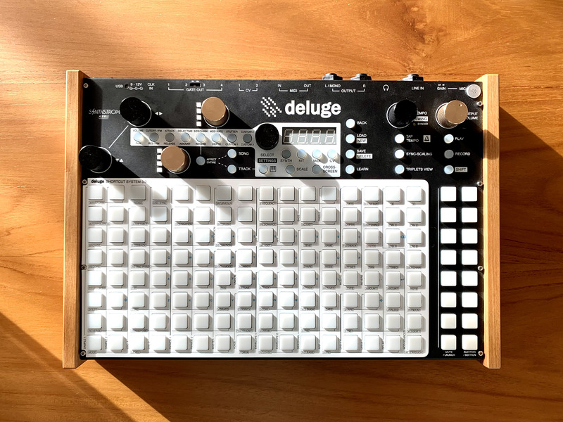

tools
An incomplete list of things that help me do what I want to do, and sometimes distract me from doing the things that I should do.
For related discussions about Gear Acquisition Syndrome: see covetousness.
Music
Tools for music:
Computers
- MacBook Pro 13 in (late 2017 model)
- monome norns shield
Software
Controllers
- 16n
- bleached (see also diy)
- Arturia Microlab (a lovely gift courtesy of some friends)
Past tools:
Synthstrom Audible Deluge

As much as I enjoyed the Deluge, there came a point where I realised that I wanted something a lot more open-ended. There was a lot of freedom with the Deluge, more so than any other sequencer (as far as I could tell), but I still felt constrained. In many ways, I would have had to fight against it to achieve what I wanted to, although it could do so much. The sample manipulation was very nice (and I miss the tactility of slicing samples), but it was also very limited and very cumbersome. The playback options were also limited (although coming firmware promised additional possibilities). There was also the lack of a real screen, which was very liberating but also very frustrating at times. Given the limited financial resources that I was (and am) willing/able to dedicate to music, I decided that it was necessary to let this go.
Teenage Engineering OP-Z
I chose to let go of the OP-Z because I couldn’t trust its build quality. The sampling options were limited as well, and there was some trouble with the clicks and loop points. I have to admit that the sequencer was excellent, and so was the performance aspect and tape mode. The punch-in effects were great. Many fun jams were had, but in the end, I decided that I couldn’t keep an item in my toolkit which I was constantly afraid of getting bent.